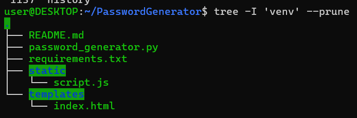

Introdução
Em um mundo cada vez mais digital, a segurança da informação tornou-se essencial, e uma das medidas mais básicas (mas importantíssima) é o uso de senhas seguras. A respeito disso, trabalhei em um projeto web de Gerador de Senhas Seguras, utilizando Python com Flask, HTML, Tailwind CSS e JavaScript, que serve para gerar senhas personalizadas com facilidade. Aqui, além de mostrar como a aplicação funciona, também discuto por que esse tema é tão importante.
Senhas fracas, algo que é obviamente incorreto, porém ainda muito praticado, frequentemente desconsideram que qualquer um pode entrar com um esforço mínimo. Elas deixam usuários e empresas expostos a riscos absurdos e abrem portas para outras invasões mais sérias.
Aqui, além de mostrar como a aplicação funciona, também discuto por que esse tema é tão importante.
O Gerador de Senhas Seguras é um exemplo prático de uma ferramenta simples que pode ajudar na segurança digital. Combinando tecnologias acessíveis e boas práticas de programação, é possível entregar soluções úteis e didáticas que podem ser aplicadas em projetos pessoais ou profissionais.
Vulnerabilidades Causadas por Senhas Fracas
Vulnerabilidades são bem conhecidas dos estudantes/profissionais e de atacantes, mas as pessoas de fora da área não fazem ideia do que são, e isso é um problema, pois o conhecimento é fundamental para a prevenção.
- Roubo de Dados Sensíveis: Provavelmente o mais assustador. Dados pessoais e bancários, informações de clientes, documentos ou arquivos confidenciais, tudo isso pode ser extraído e vazado com acesso à conta, uma vez que isso acontece, seus dados estarão disponíveis para qualquer um com interesse e recursos, mesmo que você não seja um alvo especifico, ainda pode uma vitima “aleatória”. Principalmente no Brasil, onde os cidadãos tem CPF, com essas informações vazadas, é muito fácil ser uma vitima com compras (ou dividas) que não fez no seu nome.
- Acesso Não Autorizado: Provavelmente o mais obvio de todos, porém, muitos nem pensam sobre a verdadeira extensão dos danos que um acesso não autorizado pode causar. Invasores podem acessar contas pessoais, corporativas ou administrativas, se isso acontecer, muito provavelmente não vai ser apenas curiosidade.
- Instalação de Malware: O mais técnico da lista. Diversos programas maliciosos podem ser instalados, podem servir para manter o acesso do atacante, coletar mais informações com o tempo, usar a máquina para minerar criptomoedas, exibir “anúncios indesejados” ou até espionar pela câmera.
Ataques Possíveis
Assim que uma senha é descoberta, diversos ataques são possíveis, como:
- Credential Stuffing (”Preenchimento de Credenciais” é uma tradução possível): O atacante tenta conectar com o mesmo e-mail e senha vazados em outros serviços, como redes sociais ou aplicativos, como muitas pessoas reutilizam senhas, costumam conseguir.
- Account Takeover (Tomada de Conta): Uma vez dentro, o atacante pode alterar os dados da conta (é comum que ao alterar a senha os outros dispositivos conectados sejam desconectados) e até realizar compras caso se trate de dados financeiros.
- Phishing: Com as informações da conta (ou domínio sobre ela), o atacante pode montar e-mails ou mensagens extremamente convincentes para enganar colegas ou clientes.
- Ransomware: Com acesso suficiente, é possível criptografar os arquivos importantes (ou a máquina toda) e pedir pagamento (normalmente em criptomoeda) em troca da liberação.
- Espionagem Corporativa: Podendo acessar a rede de uma empresa, o atacante pode ter as informações sigilosas (contratos, planos, documentos de colaboradores, etc) na palma da mão, e posteriormente, vazar tudo isso.
Tecnologias Utilizadas
- Flask (Python) - Framework leve para desenvolvimento web.
- HTML/CSS — Estrutura e estilo da interface.
- JavaScript — Comunicação assíncrona com o backend (AJAX).
- Python — Para geração e personalização das senhas.
Estrutura do Projeto
Tree da estrutura do projeto.
Ambiente Virtual Python no Ubuntu
Antes de começar a escrever código, é importante preparar o ambiente.
Quando estamos desenvolvendo projetos em Python, é comum que diferentes aplicações precisem de versões diferentes das mesmas bibliotecas. Para evitar conflitos entre essas dependências, usamos ambientes virtuais.
Um ambiente virtual é como uma “área isolada” onde podemos instalar pacotes Python específicos para um projeto, sem interferir nas bibliotecas instaladas globalmente no sistema. Isso permite manter os projetos organizados e evitar conflitos de dependência.
Para iniciar um ambiente virtual usamos `python3 -m venv venv`.
O segundo “venv” é apenas o nome, podemos escolher outro. Para ativar o ambiente usamos `source venv/bin/activate`
Esse “venv” no começo é o nome, portanto se você criou com um nome diferente deve coloca-lo aí.
Após ativar no ambiente, o nome dele aparece entre parênteses no começo, aproveitei para verificar as versões do Python3 e pip3.
Verificação da versão de Python e pip.
Com ambos instalados podemos começar com a estrutura do projeto. Como vou usar Flask, é o que precisamos instalar, com pip install flask.
Instalação do Flask.
Para um pouco mais de segurança e profissionalismo, é bom criar o arquivo “requirements.txt”, ele armazena os “pré-requisitos” para executar o programa, desse modo, podemos “passar” para outra máquina e instalar essas dependências para que o programa possa ser executável, se enviar o programa com requirements.txt para o GitHub, quem baixar o programa pode executá-lo para que o programa funcione.
pip freeze serve para verificar quais são essas dependências.
Com o > requirements.txt essas dependências são adicionadas no arquivo.
Criação do requirements.txt.
O que é Flask?
Flask é um framework de Python que serve para criar aplicações web.
O Flask funciona como o “cérebro” por trás do site, responsável por organizar como as páginas funcionam, como o que acontece quando um botão é clicado e como os dados são processados.
Enquanto o HTML, CSS e JavaScript são o “visual” do site (o que o usuário interage), o Flask atua “por baixo dos panos”.
O PROJETO
Agora, com o ambiente e estrutura preparados, vamos para o código em si.
Esse é um formulário interativo que permite ao usuário gerar senhas seguras e personalizadas diretamente do navegador. Ele se conecta ao Flask, que gera a senha com base nas escolhas do usuário.
Começando (brevemente) com HTML e CSS (Tailwind)
Cabeçalho (head) - Importa o Tailwind CSS (ou um CSS comum) e define informações básicas da página, como o título.
Corpo (body) - Contém os elementos visuais que o usuário interage, principalmente o Formulário (form), com um campo para escolher o tamanho da senha, 3 checkboxes para decidir se a senha terá letras maiúsculas, números e/ou caracteres especiais, e por fim o botão para gerar a senha.
Avançando com o Javascript
Este script “recebe” o envio do formulário de geração de senhas. Quando o botão "Gerar Senha" é clicado, ele pega as opções marcadas pelo usuário (comprimento da senha, incluir maiúsculas, números e símbolos), envia essas informações para o servidor Flask, impede o recarregamento da página, recebe a senha gerada e exibe na tela.
Código JavaScript explicado.
Esse script transforma o formulário em algo interativo, que traz um retorno de algo real, não apenas visual, mas funcional, ele se comunica com o servidor para gerar a “senha à gosto do usuário”.
Python
Finalmente chegando onde mais interessa: Python!
Backend (Flask)
O backend é responsável por gerar a senha com base nas escolhas do usuário.
Código Python explicado.
Rotas Flask
Talvez a parte mais complexa do projeto…
Rotas Flask.
No caso do Gerador de Senhas, o Flask funciona assim:
- O usuário preenche o formulário no site.
- O JavaScript pega essas informações (como tamanho da senha, se quer números ou caracteres especiais).
- O JavaScript envia essas informações para o Flask.
- O Flask usa Python para gerar uma senha segura com base no que foi pedido.
- O Flask devolve a senha pronta.
- O JavaScript exibe a senha na tela do usuário.
Neste projeto, o Flask tem 3 papéis principais:
- Exibir o site — Quando alguém acessa a página inicial (/), o Flask entrega o arquivo index.html, que mostra a interface do gerador de senhas.
- Receber os dados do usuário — - O usuário escolhe o tamanho da senha e outras opções. Esses dados são enviados ao Flask por meio de uma requisição do JavaScript.
- Gerar e devolver a senha — - Com as informações recebidas, o Flask monta uma senha aleatória e segura usando Python. Em seguida, envia essa senha de volta ao site para ser exibida.
Funcionalidades da Aplicação
- Geração dinâmica de senhas — O backend gera uma nova senha a cada requisição.
- Personalização — - O usuário define o comprimento e os tipos de caracteres a incluir.
- Interface amigável — - O front-end é simples e direto.
Benefícios da Aplicação
- Requisição assíncrona — A comunicação entre frontend e backend é fluida, sem recarregar a página.
- Segurança — - Senhas aleatórias são menos vulneráveis a ataques como força bruta e dicionário.
- Usabilidade — - Simples para usuários leigos.
Considerações sobre Segurança
Embora a geração de senhas seguras ajude bastante, a segurança não deve parar por aí. É importante também:
- Evitar reutilização de senhas;
- Utilizar autenticação multifator (MFA);
- Armazenar senhas com hash (em sistemas internos);
- Usar gerenciadores de senhas para organizar as credenciais.
DISCLAIMER
Este material foi elaborado para compartilhar conhecimento de forma gratuita e acessível. Sou um estudante, e todo o conteúdo aqui apresentado reflete meus estudos, interpretações e experiências pessoais durante minha jornada de aprendizado.
Este artigo não tem fins comerciais e não possui qualquer vínculo. Todo o conteúdo foi desenvolvido de forma original, sem a intenção de reproduzir ou plagiar obras de terceiros.
Caso algum trecho ou imagem coincida com materiais já existentes, trata-se de coincidência não intencional e estou aberto a revisar/corrigir/remover o conteúdo, se necessário.
As informações aqui contidas não substituem orientações profissionais ou consultorias especializadas em segurança da informação.
As ilustrações presentes neste material foram geradas com inteligência artificial, para tornar a leitura mais visual e didática. Não representam pessoas/obras reais e não têm fins comerciais, sendo utilizadas unicamente como recurso ilustrativo e complementar ao conteúdo educativo.
Este material é parte do meu portfólio como estudante e tem como objetivo demonstrar habilidades, incentivar o aprendizado e colaborar com a comunidade.**